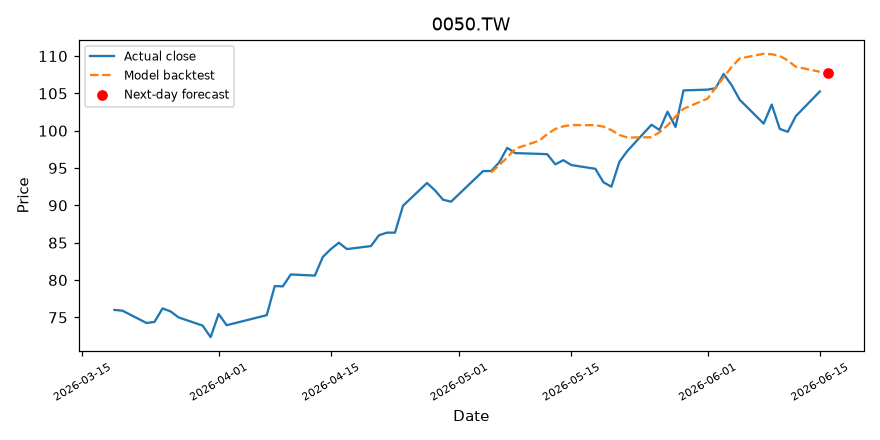
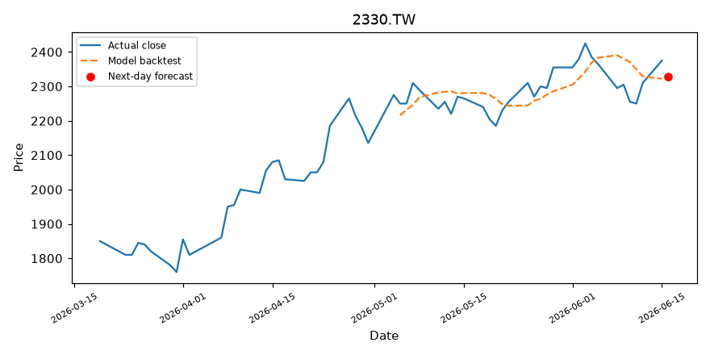
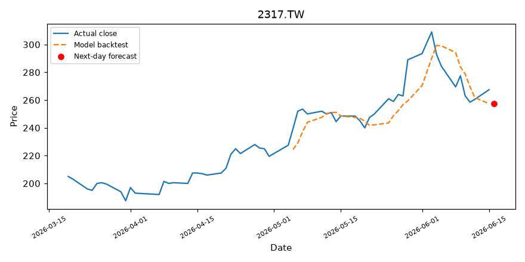
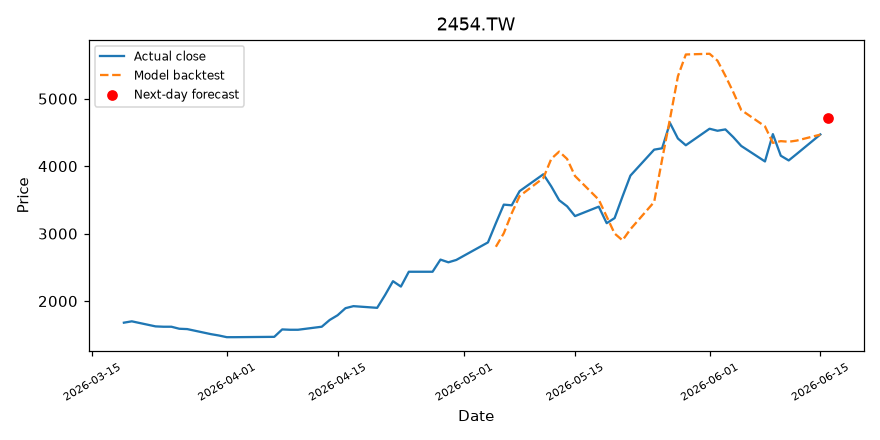
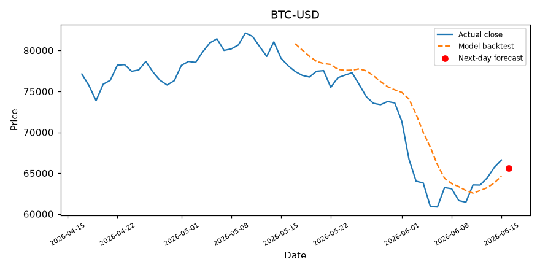
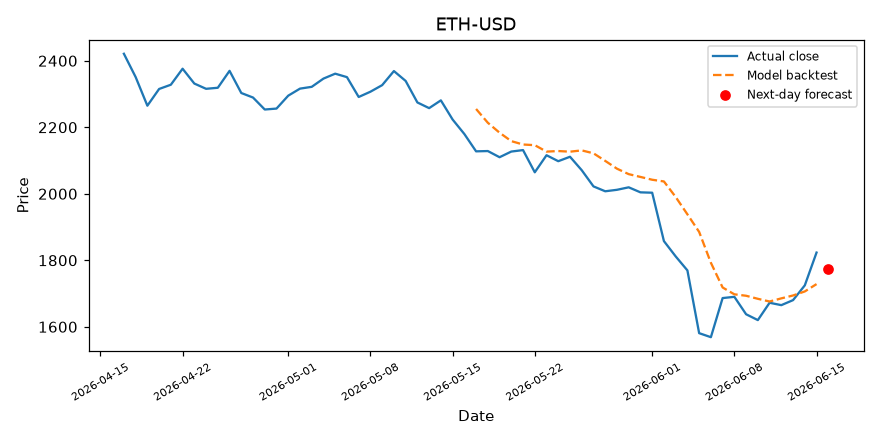

⚠️ 本頁為機器學習教學/實驗用途，預測僅供參考，不構成任何投資建議。
元大台灣50 0050.TW
最新收盤105.25
明日預測107.75
預測變動+2.38%
訊號📈 偏多

新聞情緒 中性 ⚪
（12 則，分數 +0.08）
- 0050 元大台灣50 - 近3年大賺488%，為何我勸你別把0050正2當核心持股- 股市爆料同學會 - CMoney
- 投資人逢低搶反彈 0050和正2的6月迄今申購量近1700億 - UDN
- 美伊停戰台股飆千點！外資大買官股調節-財經焦點情報站 - CMoney投資網誌
- 高含積量不等於高報酬！市值型ETF績效一表看 00905超車0050和大盤表現最抗震 - news.cnyes.com
台積電 2330.TW
最新收盤2375.00
明日預測2329.27
預測變動-1.93%
訊號📉 偏空

新聞情緒 中性 ⚪
（12 則，分數 +0.00）
- 台積電全球大遷徒動搖台灣「矽盾」神話？日媒一語戳破殘酷現實 - 自由財經
- 台積電衝先進封裝揪伴擴產 今年 CoWoS 產能缺口有望收斂至一成 | 產業熱點 | 產業 - 經濟日報
- 不只台積電！外媒點名「3檔王者」潛力驚人 長抱有機會笑到最後 - Yahoo股市
- 台積電等大案帶動 今年前5月對外投資大增133% - 中央社 CNA
鴻海 2317.TW
最新收盤267.50
明日預測257.59
預測變動-3.70%
訊號📉 偏空

新聞情緒 中性 ⚪
（12 則，分數 +0.00）
- 鴻海百萬股東注意！配息微幅下修至7.17元 - 自由財經
- 鴻海衝上300元又下跌，現在還能進場？年領股息150萬老手：買在乏人問津時 - 商周財富網
- 鴻海營收／5月8,594億元 續創歷年同期新高 - 經濟日報
- 預言iPhone單季要組5400萬支！大摩點名「3台廠」開利多趴 需求火熱燒進高階市場 - Yahoo股市
聯發科 2454.TW
最新收盤4470.00
明日預測4712.41
預測變動+5.42%
訊號📈 偏多

新聞情緒 偏多 🟢
（12 則，分數 +0.17）
- 早盤快訊》大盤噴發千點別亂追！聯發科、國巨領頭強攻，「這幾檔」卻重挫逾10% | 下班經濟學 | 財經 - 風傳媒
- 台股寫第8大漲點！台積電、聯發科領攻 國巨飆新高被動元件19檔漲停 - 民報
- 博通大客戶傳轉單，市場盯上聯發科！AI ASIC成台灣IC設計廠下一階段成長主軸 - 數位時代
- 聯發科狂漲175元！台積電開高50元、權值股紅通通 台股早盤大漲1269點重返45000關卡 - Yahoo股市
比特幣 BTC-USD
最新收盤66605.58
明日預測65580.43
預測變動-1.54%
訊號📉 偏空

新聞情緒 偏多 🟢
（12 則，分數 +0.17）
- 比特幣還有近1倍漲幅？各大金融目標最高喊17萬美元關鍵利多曝光- 日報 - 工商時報
- 川普宣布伊朗和平協議底定 油價大跌金價軟比特幣飆近6.5萬美元 - Yahoo股市
- 美銀點名美伊和平協議「6大」受惠資產！消費股、比特幣、黃金全上榜 - news.cnyes.com
- Strategy 砸 1 億美元再加碼 1,587 枚比特幣！總持倉直逼 85 萬枚、耗資突破 640 億鎂 - 動區動趨
以太幣 ETH-USD
最新收盤1823.24
明日預測1773.57
預測變動-2.72%
訊號📉 偏空

新聞情緒 偏多 🟢
（12 則，分數 +0.42）
- 「華爾街神算子」Tom Lee喊快買！「這一」加密貨幣有望上漲14870% - news.cnyes.com
- 基本面強勁！渣打看多以太幣：今年底上看 4 千美元、 2030 年飆到 4 萬美元 - 區塊客
- 2天7次清算後繼續衝 麻吉大哥加碼押注ETH上漲 網驚：太瘋狂 - 自由財經
- 加密貨幣今日：為什麼比特幣、以太坊和瑞波幣上漲？ - FXStreet